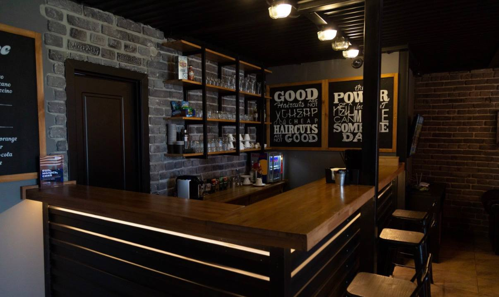

The MarketBar Philosophy
The Spirito MarketBar concept unifies modern grooming retail with an authentic hospitality lounge in Astana. We believe that sustaining a refined personal look requires professional products engineered specifically for coarse facial hair and sensitive male skin. While preparing for an appointment or unwinding afterward, visitors can review our curated apothecary shelves or order refreshing non-alcoholic botanical beverages.
Every pomade, clay, and conditioning elixir available on our shelves is sourced directly from verified European manufacturers. Before adding any formula to our inventory, our head artisans rigorously test its hold performance, natural ingredient stability, and ease of washing out.
| Category | Product Specification | Net Weight / Volume | Retail Price (KZT) |
|---|---|---|---|
| Hair Styling | Water-Soluble Matte Pomade | 100 ml | 8 500 |
| Texturizing Volumizing Sea Salt Clay | 80 g | 7 900 | |
| Beard Maintenance | Organic Cedar Nourishing Oil | 50 ml | 6 400 |
| Beard Conditioning Butter Cream | 90 ml | 7 200 | |
| Lounge Bar | Colombian Double Roast Espresso | 60 ml | 1 200 |
